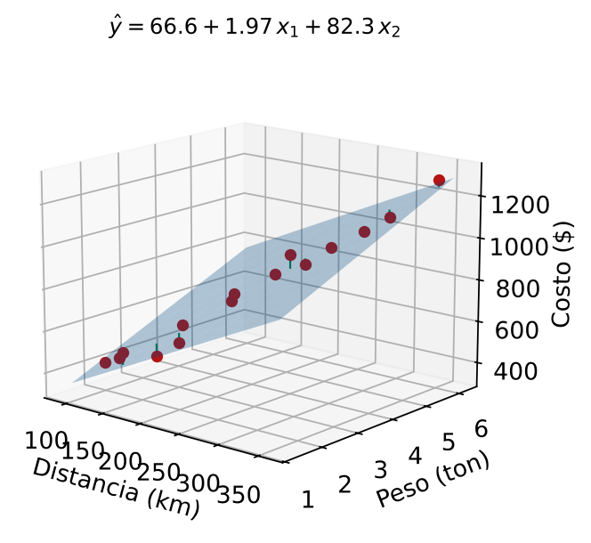

Regresión Lineal Múltiple
Formulación Matricial y Modelado de Costos Logísticos
Módulo 5 — Regresión y Análisis de Datos
Matemáticas 2 — Clase 23
Cátedra de Matemáticas 2
Ingeniería en Logística
Clase 23
Contenidos de la Clase
- Objetivos de Aprendizaje
- ¿Por qué Necesitamos Múltiples Variables?
- Modelo de Regresión Múltiple
- Ecuaciones Normales: Obtención de β̂
- Matriz de Diseño: Construcción Paso a Paso
- Interpretación: Efectos Parciales
- ¿Por qué los Coeficientes Cambian al Agregar Variables?
- MATLAB: Regresión Múltiple — Método Matricial
- MATLAB: Evaluación y Predicción
- MATLAB: fitlm — Análisis Completo Automático
- R² Ajustado: Penalizar por Complejidad
- Selección de Variables: Principio de Parsimonia
- Caso: Modelar el Costo Total de Distribución
- ¿Qué Factor Atacar para Reducir Costos?
- Imagen: Plano de Regresión en ℝ³
- Resumen: Regresión Múltiple vs Simple
- Punto de Decisión
- Tarea para la Clase 24
- Referencias
Objetivos de Aprendizaje
Al finalizar esta clase el estudiante será capaz de:
- Formular un modelo de regresión lineal múltiple con \(k\) predictores.
- Escribir el modelo en forma matricial \(\mathbf{y} = \mathbf{X}\boldsymbol{\beta} + \boldsymbol{\varepsilon}\).
- Obtener los coeficientes vía ecuaciones normales \(\hat{\boldsymbol{\beta}} = (\mathbf{X}^T\mathbf{X})^{-1}\mathbf{X}^T\mathbf{y}\).
- Implementar la regresión múltiple en MATLAB usando la división matricial y
fitlm.
- Interpretar cada coeficiente como efecto parcial (manteniendo constantes las demás variables).
- Decidir qué factor atacar primero para reducir costos logísticos.
Conexión con Clases 21–22
Clases 21–22: un solo predictor \(x\).
Clase 23: varios predictores simultáneos \(x_1, x_2, \ldots, x_k\).
El álgebra lineal (ecuaciones normales) ya la conocemos del Módulo 1–2.
¿Por qué Necesitamos Múltiples Variables?
El problema de la regresión simple
Modelos separados para distancia, peso y paradas.
- Cada modelo ignora las demás variables
- Los coeficientes pueden estar sesgados
- No se puede controlar el efecto de otras variables
Ejemplo de sesgo
Las rutas largas también tienen más paradas.
Si modelamos "costo vs distancia" sin controlar paradas, \(\hat\beta_{\text{dist}}\) absorbe parte del efecto de las paradas.
El coeficiente queda sobreestimado.
La solución: incluir todo
\[ \hat y = \beta_0 + \beta_1 x_1 + \beta_2 x_2 + \beta_3 x_3 \]
Cada \(\hat\beta_j\) mide el efecto de \(x_j\) manteniendo constantes las demás variables.
Esto elimina el sesgo de variables omitidas.
Logística en la práctica
El costo de un envío depende simultáneamente de: distancia, peso, paradas, tipo de vehículo, hora del día...
Modelo de Regresión Múltiple
Modelo con \(k\) predictores
\[ y_i = \beta_0 + \beta_1 x_{i1} + \beta_2 x_{i2} + \cdots + \beta_k x_{ik} + \varepsilon_i, \quad i = 1,\ldots,n \]
Para \(n\) observaciones y \(k=3\) predictores (distancia, peso, paradas):
\[ \begin{pmatrix}y_1\\\vdots\\y_n\end{pmatrix} = \begin{pmatrix} 1 & x_{11} & x_{12} & x_{13}\\ \vdots & \vdots & \vdots & \vdots\\ 1 & x_{n1} & x_{n2} & x_{n3} \end{pmatrix} \begin{pmatrix}\beta_0\\\beta_1\\\beta_2\\\beta_3\end{pmatrix} + \begin{pmatrix}\varepsilon_1\\\vdots\\\varepsilon_n\end{pmatrix} \]
\[ \underbrace{\mathbf{y}}_{n\times1} = \underbrace{\mathbf{X}}_{n\times(k+1)} \underbrace{\boldsymbol{\beta}}_{(k+1)\times1} + \underbrace{\boldsymbol{\varepsilon}}_{n\times1} \]
donde \(\mathbf{X}\) es la matriz de diseño (primera columna = unos).
Conexión directa con Módulo 1-2
Esta es exactamente la forma \(A\mathbf{x}=\mathbf{b}\) que estudiamos.
Ahora \(A=\mathbf{X}\), \(\mathbf{x}=\boldsymbol{\beta}\), \(\mathbf{b}=\mathbf{y}\).
Como \(n > k+1\), el sistema es sobredeterminado: usamos MCO.
Ecuaciones Normales: Obtención de \(\hat{\boldsymbol{\beta}}\)
Criterio MCO: minimizar \(\|\mathbf{y}-\mathbf{X}\boldsymbol{\beta}\|^2\).
La solución satisface las ecuaciones normales:
\[ \mathbf{X}^T\mathbf{X}\,\hat{\boldsymbol{\beta}} = \mathbf{X}^T\mathbf{y} \]
Si \(\mathbf{X}^T\mathbf{X}\) es invertible:
\[ \boxed{\hat{\boldsymbol{\beta}} = (\mathbf{X}^T\mathbf{X})^{-1}\mathbf{X}^T\mathbf{y}} \]
Propiedades de \(\mathbf{X}^T\mathbf{X}\)
- Es simétrica: \((\mathbf{X}^T\mathbf{X})^T = \mathbf{X}^T\mathbf{X}\)
- Es semidefinida positiva
- Es invertible si las columnas de \(\mathbf{X}\) son linealmente independientes (no hay multicolinealidad perfecta)
- Dimensión: \((k+1)\times(k+1)\)
En MATLAB
- Método 1 (ecuaciones normales):
beta = (X'*X) \ (X'*y)
- Método 2 (división matricial directa):
beta = X \ y
- Método 3 (Statistics Toolbox):
mdl = fitlm(X_data, y)
Matriz de Diseño: Construcción Paso a Paso
Datos de 6 envíos (distancia km, peso ton, paradas #, costo $):
| Envío | Dist. \(x_1\) | Peso \(x_2\) | Paradas \(x_3\) | Costo \(y\) |
|---|
| 1 | 100 | 2.0 | 3 | 420 |
| 2 | 200 | 3.5 | 5 | 750 |
| 3 | 150 | 1.5 | 4 | 540 |
| 4 | 300 | 5.0 | 6 | 1050 |
| 5 | 250 | 4.0 | 7 | 950 |
| 6 | 180 | 2.5 | 4 | 640 |
Matriz de diseño \(\mathbf{X}\) (con columna de unos):
\[ \mathbf{X} = \begin{pmatrix} 1 & 100 & 2.0 & 3 \\ 1 & 200 & 3.5 & 5 \\ 1 & 150 & 1.5 & 4 \\ 1 & 300 & 5.0 & 6 \\ 1 & 250 & 4.0 & 7 \\ 1 & 180 & 2.5 & 4 \end{pmatrix} \in \mathbb{R}^{6\times4}, \quad \mathbf{y} = \begin{pmatrix}420\\750\\540\\1050\\950\\640\end{pmatrix} \]
El sistema \(\mathbf{X}\boldsymbol{\beta}=\mathbf{y}\) tiene 6 ecuaciones y 4 incógnitas (\(\beta_0,\beta_1,\beta_2,\beta_3\)).
Sobredeterminado: MCO da la mejor solución.
Interpretación: Efectos Parciales
\[ \hat y = \hat\beta_0 + \hat\beta_1 x_1 + \hat\beta_2 x_2 + \hat\beta_3 x_3 \]
Definición de efecto parcial
\(\hat\beta_j\) es el cambio esperado en \(y\) por una unidad adicional de \(x_j\), manteniendo constantes todas las demás variables.
Con los 15 envíos del script clase23_regresion_multiple.m, el modelo ajustado es:
\[ \hat y = 22.3 + 1.41\,x_1 + 57.3\,x_2 + 49.6\,x_3 \]
| Coeficiente | Valor | Interpretación | Acción |
|---|
| \(\hat\beta_0 = 22.3\) | $22.3 | Costo fijo base (sin carga, sin distancia) | — |
| \(\hat\beta_1 = 1.41\) | $1.41/km | Efecto de distancia, dado peso y paradas fijos | Optimizar rutas |
| \(\hat\beta_2 = 57.3\) | $57.3/ton | Efecto de peso, dado distancia y paradas fijos | Reducir carga |
| \(\hat\beta_3 = 49.6\) | $49.6/par | Efecto de paradas, dado distancia y peso fijos | Consolidar |
Diferencia clave con regresión simple
En regresión simple, \(\hat\beta_{\text{dist}}\) capturaba parte del efecto de peso y paradas.
Ahora, cada coeficiente es el efecto "puro" de su variable.
¿Por qué los Coeficientes Cambian al Agregar Variables?
Comparación: regresión simple vs múltiple (15 envíos del script)
| Modelo | \(\hat\beta_{\text{dist}}\) ($/km) | \(R^2\) |
|---|
| Simple: solo distancia | 3.56 | 0.967 |
| Múltiple: dist + peso + paradas | 1.41 | 0.994 |
Explicación: en el modelo simple, cuando la distancia es alta, también tiende a ser alto el peso y el número de paradas. El coeficiente \(\hat\beta_{\text{dist}} = 3.56\) absorbió parte del efecto de las otras variables.
En el modelo múltiple, con peso y paradas controlados, el efecto "puro" de la distancia es \(\hat\beta_{\text{dist}} = 1.41\) $/km. (En estos datos, la correlación entre distancia y peso es 0.96, y entre distancia y paradas 0.94.)
Implicación práctica
Si la empresa decide reducir solo la distancia recorrida (manteniendo el peso y las paradas constantes), el ahorro real es $1.41/km, no $3.56/km.
El modelo múltiple da una estimación más precisa del efecto real.
MATLAB: Regresión Múltiple — Método Matricial
% Datos de 15 envios: distancia (km), peso (ton), paradas (#), costo ($)
dist = [100;200;150;300;250;180;220;280;130;350;190;240;310;170;260];
peso = [2.0;3.5;1.5;5.0;4.0;2.5;3.0;4.5;1.8;6.0;2.2;3.8;5.5;2.0;4.2];
paradas = [3;5;4;6;7;4;5;6;3;8;4;6;7;3;6];
y = [420;750;540;1050;950;640;760;980;480;1280;580;860;1100;510;900];
n = length(y); k = 3; % numero de predictores
% Matriz de diseno (columna de unos + predictores)
X = [ones(n,1), dist, peso, paradas]; % n x (k+1)
% Metodo 1: ecuaciones normales X'X * beta = X'y
beta_normal = (X'*X) \ (X'*y);
% Metodo 2: division matricial (mas estable numericamente)
beta = X \ y;
fprintf('=== COEFICIENTES ESTIMADOS ===\n')
fprintf('beta0 (intercepto): $%.4f\n', beta(1))
fprintf('beta1 (distancia): $%.4f/km\n', beta(2))
fprintf('beta2 (peso): $%.4f/ton\n', beta(3))
fprintf('beta3 (paradas): $%.4f/#\n', beta(4))
fprintf('\nNota: X\\y usa QR internamente, mas estable que inv(X''*X)*X''*y\n')
Los dos métodos dan el mismo resultado
Salida: beta0 = 22.3158, beta1 = 1.4116, beta2 = 57.2612, beta3 = 49.5542.
(X'*X)\(X'*y) y X\y son equivalentes para datos bien condicionados.
Preferir X\y en la práctica.
MATLAB: Evaluación y Predicción
% Valores ajustados y residuos
y_hat = X * beta;
e = y - y_hat;
% Bondad del ajuste
SCR = sum(e.^2);
SCT = sum((y - mean(y)).^2);
R2 = 1 - SCR/SCT;
se = sqrt(SCR / (n - k - 1)); % n - k - 1 grados de libertad residuales
fprintf('\n=== BONDAD DEL AJUSTE ===\n')
fprintf('R^2 = %.6f (%.2f%% de variabilidad explicada)\n', R2, 100*R2)
fprintf('se = $%.4f por envio\n', se)
fprintf('SCR = %.4f\n', SCR)
% Prediccion para un nuevo envio
nuevo = [1, 220, 3.2, 5]; % [1, dist, peso, paradas]
costo_pred = nuevo * beta;
fprintf('\nPrediccion para ruta 220km, 3.2ton, 5 paradas:\n')
fprintf(' Costo estimado: $%.2f\n', costo_pred)
fprintf(' Intervalo 95%%: [$%.2f, $%.2f]\n', ...
costo_pred - 2*se, costo_pred + 2*se)
% R^2 ajustado (penaliza por numero de predictores)
R2_adj = 1 - (1-R2)*(n-1)/(n-k-1);
fprintf('\nR^2 ajustado = %.6f\n', R2_adj)
Salida esperadaR^2 = 0.9940 · se = $22.43 · Costo estimado (220 km, 3.2 t, 5 par.) = $763.88 · Intervalo ≈ [$719, $809] · R^2 ajustado = 0.9924
MATLAB: fitlm — Análisis Completo Automático
% Tabla de datos como tabla de MATLAB
T = table(dist, peso, paradas, y, 'VariableNames', ...
{'Distancia','Peso','Paradas','Costo'});
% Ajuste con fitlm (formula de Wilkinson)
mdl = fitlm(T, 'Costo ~ Distancia + Peso + Paradas');
% Mostrar resumen completo
disp(mdl)
% Acceder a componentes especificos
fprintf('Coeficientes:\n')
disp(mdl.Coefficients)
fprintf('R^2 = %.6f\n', mdl.Rsquared.Ordinary)
fprintf('R^2 ajustado = %.6f\n', mdl.Rsquared.Adjusted)
fprintf('se = $%.4f\n', mdl.RMSE)
% Grafico de diagnostico automatico
figure
plotResiduals(mdl, 'fitted')
title('Residuos vs Valores Ajustados (fitlm)')
Salida de fitlm
Devuelve automáticamente: coeficientes, errores estándar, \(t\)-estadísticos, \(p\)-valores, \(R^2\), \(R^2\) ajustado, \(F\)-estadístico del modelo completo.
\(R^2\) Ajustado: Penalizar por Complejidad
Definición
\[ R^2_{\text{adj}} = 1 - \frac{\text{SCR}/(n-k-1)}{\text{SCT}/(n-1)} = 1 - (1-R^2)\frac{n-1}{n-k-1} \]
Penaliza por cada predictor adicional (\(k\) sube \(\Rightarrow\) denominador baja \(\Rightarrow\) \(R^2_\text{adj}\) puede bajar).
¿Por qué es importante?
- \(R^2\) nunca disminuye al agregar variables
- Agregar una variable irrelevante aumenta \(R^2\) marginalmente
- \(R^2_\text{adj}\) disminuye si la variable no aporta suficiente información
- Usar \(R^2_\text{adj}\) para comparar modelos con distinto número de predictores
Ejemplo comparativo (15 envíos)
| Modelo | \(R^2\) | \(R^2_\text{adj}\) |
|---|
| dist solo | 0.967 | 0.964 |
| dist+peso | 0.984 | 0.981 |
| dist+peso+par | 0.9940 | 0.9924 |
| +variable ruido | 0.9942 | 0.9919 |
Al agregar variable ruido: \(R^2\) sube levemente pero \(R^2_\text{adj}\) baja.
Selección de Variables: Principio de Parsimonia
Navaja de Occam aplicada a regresión
Entre dos modelos con similar capacidad predictiva, preferir el más simple (menos variables).
Criterios para incluir una variable
- \(R^2_\text{adj}\) mejora al incluirla
- Tiene sentido logístico (no solo estadístico)
- Sus datos son fáciles de obtener en operación
- No está altamente correlacionada con otras variables ya incluidas
El \(R^2_\text{adj}\) alcanza un máximo en el número óptimo de variables \(k^*\).
Caso: Modelar el Costo Total de Distribución
Dataset: 15 envíos con 3 variables predictoras (script clase23_regresion_multiple.m):
| \(x_1\): Distancia (km) | \(x_2\): Peso (ton) | \(x_3\): Paradas (#) | \(y\): Costo ($) |
|---|
| Media | 222 | 3.43 | 5.13 | 786.7 |
| Min | 100 | 1.5 | 3 | 420 |
| Max | 350 | 6.0 | 8 | 1280 |
Modelo ajustado (ejecutar en MATLAB):
\[ \hat y = 22.3 + 1.41\,x_1 + 57.3\,x_2 + 49.6\,x_3 \]
\(R^2 = 0.994\), \(R^2_\text{adj} = 0.992\), \(s_e = \$22.4\)
Lectura ejecutiva
Costo fijo: $22. Por km: +$1.41. Por tonelada: +$57.3. Por parada: +$49.6.
El modelo explica el 99.4% de la variación en costos. Error típico: ±$22.4.
¿Qué Factor Atacar para Reducir Costos?
Modelo: \(\hat y = 22.3 + 1.41\,x_1 + 57.3\,x_2 + 49.6\,x_3\)
Escenarios de mejora (manteniendo las otras variables fijas):
| Acción | \(\hat\beta_j\) | \(\Delta x_j\) | Ahorro/envío |
|---|
| A | Reducir ruta 25 km | $1.41/km | \(-25\) km | \(25\times1.41=\$35.25\) |
| B | Reducir carga 0.5 ton | $57.3/ton | \(-0.5\) ton | \(0.5\times57.3=\$28.65\) |
| C | Eliminar 1 parada | $49.6/par | \(-1\) par | \(1\times49.6=\$49.60\) |
Con 400 envíos/mes:
- Acción A: \(\$35.25 \times 400 = \$14.100\)/mes
- Acción B: \(\$28.65 \times 400 = \$11.460\)/mes
- Acción C: \(\$49.60 \times 400 = \$19.840\)/mes
Decisión: Acción C (eliminar paradas)
Mayor ahorro unitario. A diferencia de la Clase 22, aquí el efecto es puro: controlamos distancia y peso. El ahorro de $49.6 por parada no incluye el efecto de otras variables.
Plano de Regresión en \(\mathbb{R}^3\)

Plano ajustado con 2 predictores (distancia, peso) sobre los 15 envíos; en verde, los residuos
Geometría de la regresión múltiple
Con 2 predictores: la recta de regresión simple se convierte en un plano.
Con 3 o más: un hiperplano en espacio de mayor dimensión.
Los residuos son distancias verticales de los puntos al hiperplano.
Resumen: Regresión Múltiple vs Simple
| Aspecto | Regresión Simple | Regresión Múltiple |
|---|
| Modelo | \(\hat y = \beta_0 + \beta_1 x\) | \(\hat y = \beta_0 + \sum_{j=1}^k \beta_j x_j\) |
| Forma matricial | \(\hat{\boldsymbol{\beta}} = (\mathbf{X}^T\mathbf{X})^{-1}\mathbf{X}^T\mathbf{y}\) | idem |
| MATLAB | polyfit(x,y,1) | X\y o fitlm |
| Interpretación | Efecto total de \(x\) | Efecto parcial de \(x_j\) |
| Geometría | Recta en \(\mathbb{R}^2\) | Hiperplano en \(\mathbb{R}^{k+1}\) |
| Bondad | \(R^2\) | \(R^2\) y \(R^2_\text{adj}\) |
| Sesgo | Posible (variables omitidas) | Reducido |
Ventajas de la regresión múltiple
Efectos parciales más precisos. Mayor \(R^2\). Controla variables de confusión. Decisión más informada.
Cuidados
Multicolinealidad (variables correlacionadas entre sí). Necesita más datos (\(n \gg k\)). Más complejo de interpretar.
Punto de Decisión
Pregunta de Cierre
El modelo múltiple da \(\hat\beta_{\text{dist}}=\$1.41\)/km, pero el modelo simple daba \(\hat\beta_{\text{dist}}=\$3.56\)/km. Tu gerente quiere saber: si reducimos 30 km en cada ruta, ¿ahorramos $42.3 o $106.8 por envío?
¿Cuál estimación usarías y por qué? ¿Qué condición debe cumplirse para que cada estimación sea correcta?
Usar $1.41 (múltiple)
Si al reducir distancia, el peso y las paradas permanecen constantes. Efecto puro de la distancia.
Usar $3.56 (simple)
Si al reducir distancia, también se reducen peso y paradas proporcionalmente (todo junto).
En la práctica
Depende del contexto operativo. El modelo múltiple es más preciso cuando se puede controlar cada variable.
Tarea para la Clase 24
Lecturas
- Montgomery, Cap. 3: Regresión múltiple — pruebas de hipótesis y bondad
- Montgomery, Cap. 2.4: Error cuadrático medio (MSE) y RMSE
Ejercicio preparatorio
Con los datos del script
clase23_regresion_multiple.m:
- Ajustar el modelo con los 3 predictores (dist, peso, paradas).
- Ajustar los 3 modelos simples correspondientes y comparar los coeficientes.
- Calcular \(R^2\) y \(R^2_\text{adj}\) para el modelo múltiple.
- Agregar una cuarta variable aleatoria (
randn(n,1)) y ver si \(R^2_\text{adj}\) sube o baja.
- Predecir el costo de un envío de 280 km, 4 ton, 6 paradas.
Próxima clase 24
MSE y RMSE — Evaluar la precisión de los pronósticos logísticos
Referencias
- Montgomery, D.C., Peck, E.A. & Vining, G.G. (2012). Introduction to Linear Regression Analysis (5th ed.). Wiley. Cap. 3 (Regresión lineal múltiple), pp. 67–130.
- Lay, D.C., Lay, S.R., McDonald, J.J. (2016). Álgebra Lineal y sus Aplicaciones (5a ed.). Pearson. Cap. 6.5 (Mínimos cuadrados y ecuaciones normales).
- Draper, N.R. & Smith, H. (1998). Applied Regression Analysis (3rd ed.). Wiley. Cap. 4–5.
- MATLAB Documentation.
fitlm, plotResiduals, stepwiselm. https://www.mathworks.com/help/stats/
- Material propio: Dataset costos logísticos, Script
clase23_regresion_multiple.m.
Matemáticas 2 — Clase 23 | Regresión Múltiple
¡Hasta la próxima clase!
Clase 24: MSE y RMSE — Evaluar la Precisión de Pronósticos
contacto@mat2logistica.edu